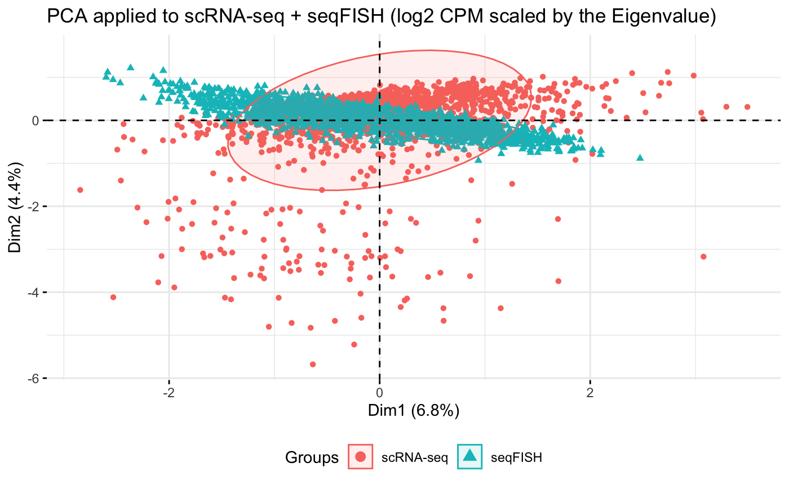
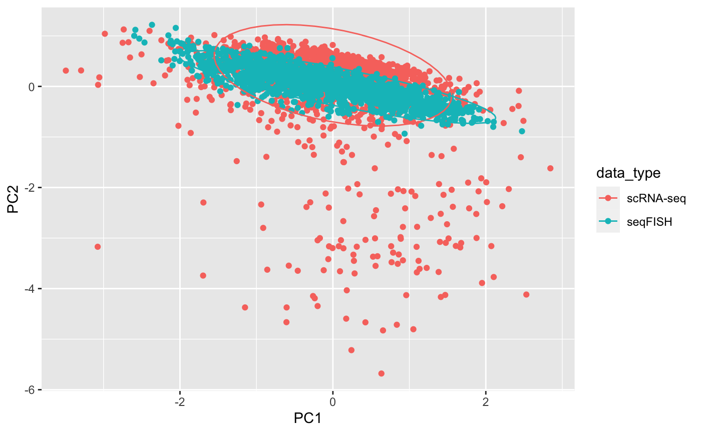
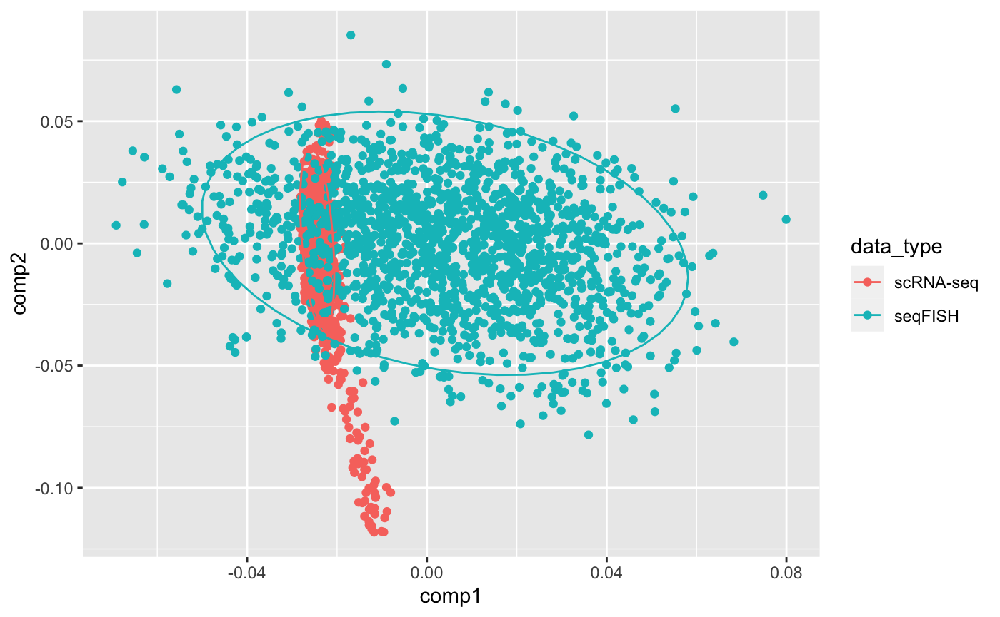

seqFISH and scRNASeq integration using Semi-Supervised Elastic Net (ssenet)
Amrit Singh1
Source:vignettes/seqfish_ssenet.Rmd
seqfish_ssenet.RmdImport quantile normalized data from Zhu et al 2018: seqFISH paper
q_scrnaseq_data <- read.delim(here::here("inst", "extdata", "tasic_training_b2.txt"), row.names = 1, header = FALSE) q_scrnaseq_cellLabels <- read.delim(here::here("inst", "extdata", "tasic_labels.tsv"), header = FALSE) colnames(q_scrnaseq_data) <- gsub("-", ".", q_scrnaseq_cellLabels$V2) all(ncol(q_scrnaseq_data) == nrow(q_scrnaseq_cellLabels)) ## do the number of cells match?
## [1] TRUEq_seqfish_data <- read.delim(here::here("inst", "extdata", "seqfish_cortex_b2_testing.txt"), row.names = 1, header = FALSE) q_seqfish_cellLabels <- read.delim(here::here("inst", "extdata", "seqfish_labels.tsv"), row.names = 1, header = FALSE) all(ncol(q_seqfish_data) == nrow(q_seqfish_cellLabels)) ## do the number of cells match?
## [1] TRUEall(rownames(q_scrnaseq_data) == rownames(q_seqfish_data)) ## are the genes in the same order in both datasets
## [1] TRUEImport raw counts data from Zhu et al 2018: seqFISH paper
- scRNASeq data (GSE71585_RefSeq_counts.csv.gz) obtained from GEO (https://www.ncbi.nlm.nih.gov/geo/query/acc.cgi?acc=GSE71585)
- seqFISH data obatined from the Qian Zhu
# Import gene counts for scRNAseq and seqFISH data seqfish_files <- grep("fcortex.gene", list.files(here::here("inst", "extdata", "seqfish_raw_gene_counts/genes"), full.names = TRUE), value = TRUE) genes <- seqfish_files %>% strsplit(., "fcortex.gene.") %>% lapply(., function(i){ gsub(".txt", "", i[2]) }) %>% unlist() %>% tolower() seqfish_data <- lapply(seqfish_files, function(i) { read.table(i, sep=' ', row.names = 1) }) %>% do.call(cbind, .) colnames(seqfish_data) <- genes seqfish_data <- t(seqfish_data[, intersect(rownames(q_seqfish_data), genes)]) ## scrnaseq scrnaseq_data <- read.csv(here::here("inst", "extdata","GSE71585_RefSeq_counts.csv"), row.names = 1) # https://www.ncbi.nlm.nih.gov/geo/query/acc.cgi?acc=GSE71585 rownames(scrnaseq_data) <- tolower(rownames(scrnaseq_data)) scrnaseq_data <- scrnaseq_data[intersect(rownames(q_scrnaseq_data), rownames(scrnaseq_data)), colnames(q_scrnaseq_data)] ## make sure all datasets have the same number of genes common_genes <- Reduce(intersect, list(rownames(q_scrnaseq_data), rownames(q_seqfish_data), rownames(scrnaseq_data), rownames(seqfish_data))) seqfish_data <- seqfish_data[common_genes, ] q_seqfish_data <- q_seqfish_data[common_genes, ] scrnaseq_data <- scrnaseq_data[common_genes, ] q_scrnaseq_data <- q_scrnaseq_data[common_genes, ]
Visual the scRNA-seq data and seqFISH quantile normalized data
Histogram
combined_data <- rbind(t(q_scrnaseq_data), t(q_seqfish_data)) rownames(combined_data) <- paste0("cell", 1:nrow(combined_data)) celltypes <- c(as.character(q_scrnaseq_cellLabels$V1), rep("seqFISH", ncol(q_seqfish_data))) data_type <- rep(c("scRNA-seq", "seqFISH"), c(ncol(q_scrnaseq_data), ncol(q_seqfish_data))) combined_data %>% as.data.frame() %>% mutate(data = data_type) %>% gather(gene, exp, -data) %>% ggplot(aes(x=exp, fill=data)) + geom_histogram() + geom_density() + theme_bw() + ylab("Frequency") + xlab("Gene expression") + ggtitle("Histograms of scRNA-seq and seqFISH data")
## `stat_bin()` using `bins = 30`. Pick better value with `binwidth`.
PCA
pca <- prcomp(combined_data, scale. = TRUE) fviz_pca_ind(pca, label="none", habillage=data_type, addEllipses=TRUE, ellipse.level=0.80) + theme(legend.position = "bottom") + ggtitle("PCA applied to scRNA-seq + seqFISH (Quantile normalized data)")

data normalization issues between scRNA-seq and seqFISH data!
Visual the scRNA-seq data and seqFISH raw count data
Histogram
combined_data <- rbind(t(scrnaseq_data), t(seqfish_data)) rownames(combined_data) <- paste0("cell", 1:nrow(combined_data)) data_type <- rep(c("scRNA-seq", "seqFISH"), c(ncol(scrnaseq_data), ncol(seqfish_data))) combined_data %>% as.data.frame() %>% mutate(data = data_type) %>% gather(gene, exp, -data) %>% ggplot(aes(x=exp, fill=data)) + geom_histogram() + geom_density() + theme_bw() + scale_x_log10() + ylab("Frequency") + xlab("Gene expression") + ggtitle("Histograms of scRNA-seq and seqFISH data")
## Warning: Transformation introduced infinite values in continuous x-axis
## Warning: Transformation introduced infinite values in continuous x-axis## `stat_bin()` using `bins = 30`. Pick better value with `binwidth`.## Warning: Removed 169007 rows containing non-finite values (stat_bin).## Warning: Removed 169007 rows containing non-finite values (stat_density).
PCA
Raw counts
pca <- prcomp(combined_data, scale. = TRUE) fviz_pca_ind(pca, label="none", habillage=data_type, addEllipses=TRUE, ellipse.level=0.80) + theme(legend.position = "bottom") + ggtitle("PCA applied to scRNA-seq + seqFISH (Raw counts)")

GLM-PCA
Raw counts
families <- c("poi", "mult") lapply(families, function(i){ glmpca(t(combined_data), L=2, fam = i)$factors }) %>% do.call(rbind, .) %>% mutate(family = rep(families, each = nrow(combined_data)), data_type = rep(data_type, length(families))) %>% ggplot(aes(x = dim1, y=dim2, color = data_type)) + geom_point() + facet_wrap(~family) + theme(legend.position = "bottom") + ggtitle("GLM-PCA applied to scRNA-seq + seqFISH (Raw counts)")

considerable differences between data distributions
log2 CPM: t(log2(t(counts + 0.5)/(lib.size + 1) * 1e+06))
cpm_scrnaseq_data <- log2(t(t(scrnaseq_data) + 0.5)/(colSums(t(scrnaseq_data)) + 1) * 1e+06) cpm_seqfish_data <- log2(t(t(seqfish_data) + 0.5)/(colSums(t(seqfish_data)) + 1) * 1e+06) cpm <- cbind(cpm_scrnaseq_data, cpm_seqfish_data) pca <- prcomp(t(cpm), scale. = TRUE) fviz_pca_ind(pca, label="none", habillage=data_type, addEllipses=TRUE, ellipse.level=0.80) + theme(legend.position = "bottom") + ggtitle("PCA applied to scRNA-seq + seqFISH (log2 CPM)")

Eigenvalue correction
cpm_eigen_scrnaseq <- scale(t(cpm_scrnaseq_data))/pca(t(cpm_scrnaseq_data), scale=TRUE)$sdev[1] cpm_eigen_seqfish <- scale(t(cpm_seqfish_data))/pca(t(cpm_seqfish_data), scale=TRUE)$sdev[1] cpm <- rbind(cpm_eigen_scrnaseq, cpm_eigen_seqfish) pca_eigenvalue <- prcomp(cpm, scale. = FALSE) fviz_pca_ind(pca_eigenvalue, label="none", habillage=data_type, addEllipses=TRUE, ellipse.level=0.80) + theme(legend.position = "bottom") + ggtitle("PCA applied to scRNA-seq + seqFISH (log2 CPM scaled by the Eigenvalue)")

pca_eigenvalue$x[1:ncol(cpm_scrnaseq_data), 1] <- -pca_eigenvalue$x[1:ncol(cpm_scrnaseq_data), 1] pca_eigenvalue$x %>% as.data.frame() %>% mutate(data_type = data_type) %>% ggplot(aes(x = PC1, y = PC2, color=data_type)) + geom_point() + stat_ellipse()

Combat correction
cpm <- cbind(cpm_scrnaseq_data, cpm_seqfish_data) combat_cpm = ComBat(dat=cpm, batch=data_type, mod=NULL, par.prior=TRUE, prior.plots=FALSE)
## Found2batches## Adjusting for0covariate(s) or covariate level(s)## Standardizing Data across genes## Fitting L/S model and finding priors## Finding parametric adjustments## Adjusting the Datacpm_combat_scrnaseq <- t(combat_cpm[, colnames(cpm_scrnaseq_data)]) cpm_combat_seqfish <- t(combat_cpm[, colnames(cpm_seqfish_data)]) pca <- prcomp(t(combat_cpm), scale. = TRUE) fviz_pca_ind(pca, label="none", habillage=data_type, addEllipses=TRUE, ellipse.level=0.80) + theme(legend.position = "bottom") + ggtitle("PCA applied to scRNA-seq + seqFISH (log2 CPM Combat corrected)")

extract common sources of variation using Partial Least Squares
PLS
result <- pls(cpm_scrnaseq_data, cpm_seqfish_data, scale = TRUE)
Correlation between X and V variates (variables)
plot(result$variates$Y[,1] ~ result$variates$X[,1]) abline(lm(result$variates$Y[,1] ~ result$variates$X[,1]))

X and Y loadings (samples)
rbind(result$loadings$X, result$loadings$Y) %>% as.data.frame() %>% mutate(data_type = data_type) %>% ggplot(aes(x = comp1, y = comp2, color=data_type)) + geom_point() + stat_ellipse()

PLS with Eigenvalue scaling
pls_eigenvalue <- pls(t(cpm_eigen_scrnaseq), t(cpm_eigen_seqfish), scale = FALSE, ncomp = ncol(cpm_eigen_scrnaseq))
Correlation between X and V variates (variables)
plot(pls_eigenvalue$variates$Y[,1] ~ pls_eigenvalue$variates$X[,1]) abline(lm(pls_eigenvalue$variates$Y[,1] ~ pls_eigenvalue$variates$X[,1]))

X and Y loadings (samples)
rbind(pls_eigenvalue$loadings$X, pls_eigenvalue$loadings$Y) %>% as.data.frame() %>% mutate(data_type = data_type) %>% ggplot(aes(x = comp1, y = comp2, color = data_type)) + geom_point() + stat_ellipse()

Save datasets
## raw data ## quantile normalized data ## CPM ## CPM - standardized+eigenvalueScaling ## variates from PCA applied to CPM - standardized+eigenvalueScaling ## variates from PLS applied to CPM - standardized+eigenvalueScaling cortex <- list(raw = list(scrnaseq = t(scrnaseq_data), seqfish = t(seqfish_data)), qnm = list(scrnaseq = t(q_scrnaseq_data), seqfish = t(q_seqfish_data)), cpm = list(scrnaseq = t(cpm_scrnaseq_data), seqfish = t(cpm_seqfish_data)), cpm_combat = list(scrnaseq = cpm_combat_scrnaseq, seqfish = cpm_combat_seqfish), cpm_eigen = list(scrnaseq = cpm_eigen_scrnaseq, seqfish = cpm_eigen_seqfish), cpm_pca = list(scrnaseq = pca_eigenvalue$x[rownames(cpm_eigen_scrnaseq), ], seqfish = pca_eigenvalue$x[rownames(cpm_eigen_seqfish), ]), cpm_pls = list(scrnaseq = pls_eigenvalue$loadings$X, seqfish = pls_eigenvalue$loadings$Y)) qnmLabels <- list(scrnaseq=q_scrnaseq_cellLabels, seqfish=q_seqfish_cellLabels) coord <- read.table(here::here("inst", "extdata", "fcortex.coordinates.txt"), sep=' ', header = FALSE)[, 3:4] colnames(coord) <- c("x", "y") usethis::use_data(cortex, overwrite = TRUE)
## ✓ Setting active project to '/Users/asingh/Documents/ubc/Conferences/2020/Banff/BIRSBIO2020.seqFISH.SSEnet'## ✓ Saving 'cortex' to 'data/cortex.rda'## ◠Document your data (see 'https://r-pkgs.org/data.html')usethis::use_data(qnmLabels, overwrite = TRUE)
## ✓ Saving 'qnmLabels' to 'data/qnmLabels.rda'
## ● Document your data (see 'https://r-pkgs.org/data.html')usethis::use_data(coord, overwrite = TRUE)
## ✓ Saving 'coord' to 'data/coord.rda'
## ● Document your data (see 'https://r-pkgs.org/data.html')Analysis for the Abstract Submission to #BIRSBioIntegration Mathematical Frameworks for Integrative Analysis of Emerging Biological Data Types
Zhu et al 2018: seqFISH paper
- 43 genes (Supplementary Table 2) to map cell types in the seqFISH data:
Step 1: mapping scRNASeq celltypes on seqFISH data
- Randomly selected a subset of genes from the list of differentially expressed and applied a multiclass support vector machine; perform evaluated using cross-validation; 43 genes were used to map cell-types in the seqFISH data
- Applied the SVM classification model to the bias-correct, quantile normalized seqFISH data to assign cell types.
library(ssenet); ## devtools::install_github("singha53/ssenet")
##
## Attaching package: 'ssenet'## The following objects are masked from 'package:NMF':
##
## extractFeatures, predict## The following object is masked from 'package:stats':
##
## predictdata("cortex"); data("qnmLabels"); data("coord"); include_graphics(here::here("inst", "extdata", "suppTable2.png"))

selectedGenes <- c("fbll1", "itpr2", "vps13c", "tnfrsf1b", "sox2", "hdx", "wrn", "sumf2", "vmn1r65", "rhob", "mrgprb1", "calb1", "pld1", "laptm5", "tbr1", "slc5a7", "abca9", "ankle1", "olr1", "cecr2", "cpne5", "blzf1", "mertk", "nell1", "npy2r", "cdc5l", "slco1c1", "pax6", "cldn5", "cyp2j5", "mfge8", "col5a1", "bmpr1b", "rrm2", "gja1", "dcx", "spag6", "csf2rb2", "gda", "arhgef26", "slc4a8", "gm805", "omg") plot(coord, col = mixOmics::color.mixo(as.numeric(qnmLabels$seqfish$V3)), pch = 21, xlab = "x-coordinates", ylab = "y-coordinates") points(coord, col = mixOmics::color.mixo(as.numeric(qnmLabels$seqfish$V3)), pch = 19)

Step 2: a systemic approach to identify multicellular niche
- HMRF (Hidden Markov Random Field): Systematically dissect the contributions of microenvironments on gene expression variation
- Divide the visual cortex into domains with coherent gene expression patterns
- HMRF enables the detection of spatial domains by systemically comparing the gene signature of each cell with its surrounding to search for coherent patterns
- Domain state of each cell was influence by 2 sources: 1) gene expression pattern and 2) domain states of neighbouring cells
- To enhance spatial domain detection 11 highly cell-specific genes were removed
- HMRF revealed 9 spatial domains; four domains were in the outer layers of the cortex ( O1-O4), four domains were located on the inside of the cortex (I1A, I1B, I2, I3), domain IS was sporadically distributed across the inner layers of the cortex.
Questions for the BIRSBiointegration workshop:
3) Are there signatures of cellular co-localization or spatial coordinates in non-spatial scRNA-seq data?
remove cells with little data
# set constants M = 2; iter = 2; ncores = iter; alpha = 1; lambda = NULL; lambda_nfolds = 3; family = "multinomial"; filter = "none"; max.iter = 10; perc.full = 1; thr.conf = 0.5; keepVar = NULL; weights = NULL; xtest=NULL; ytest=NULL; useObsWeights = FALSE; # minimum number of samples required per cell-type class (required for hyperparameter tuning and cross-validation) round(table(qnmLabels$scrnaseq$V1)/M/lambda_nfolds, 0) # remove Oligodendrocyte.2
##
## Astrocyte Endothelial Cell GABA-ergic Neuron
## 7 5 127
## Glutamatergic Neuron Microglia Oligodendrocyte.1
## 135 4 3
## Oligodendrocyte.2 Oligodendrocyte.3
## 1 5keepIndices <- which(qnmLabels$scrnaseq$V1 != "Oligodendrocyte.2") cortex$raw$scrnaseq <- cortex$raw$scrnaseq[keepIndices, ] cortex$qnm$scrnaseq <- cortex$qnm$scrnaseq[keepIndices, ] cortex$cpm$scrnaseq <- cortex$cpm$scrnaseq[keepIndices, ] cortex$cpm_combat$scrnaseq <- cortex$cpm_combat$scrnaseq[keepIndices, ] cortex$cpm_eigen$scrnaseq <- cortex$cpm_eigen$scrnaseq[keepIndices, ] cortex$cpm_pca$scrnaseq <- cortex$cpm_pca$scrnaseq[keepIndices, ] cortex$cpm_pls$scrnaseq <- cortex$cpm_pls$scrnaseq[keepIndices, ] qnmLabels$scrnaseq <- qnmLabels$scrnaseq[keepIndices, ] qnmLabels$scrnaseq$V1 <- droplevels(qnmLabels$scrnaseq$V1)
Compare cell-type label predictions using different methods and data normalizations
data_norms <- names(cortex) cl <- parallel::makeCluster(mc <- getOption("cl.cores", length(data_norms))) parallel::clusterCall(cl, function() library("ssenet"))
## [[1]]
## [1] "ssenet" "stats" "graphics" "grDevices" "utils" "datasets"
## [7] "methods" "base"
##
## [[2]]
## [1] "ssenet" "stats" "graphics" "grDevices" "utils" "datasets"
## [7] "methods" "base"
##
## [[3]]
## [1] "ssenet" "stats" "graphics" "grDevices" "utils" "datasets"
## [7] "methods" "base"
##
## [[4]]
## [1] "ssenet" "stats" "graphics" "grDevices" "utils" "datasets"
## [7] "methods" "base"
##
## [[5]]
## [1] "ssenet" "stats" "graphics" "grDevices" "utils" "datasets"
## [7] "methods" "base"
##
## [[6]]
## [1] "ssenet" "stats" "graphics" "grDevices" "utils" "datasets"
## [7] "methods" "base"
##
## [[7]]
## [1] "ssenet" "stats" "graphics" "grDevices" "utils" "datasets"
## [7] "methods" "base"parallel::clusterCall(cl, function() library("dplyr"))
## [[1]]
## [1] "dplyr" "ssenet" "stats" "graphics" "grDevices" "utils"
## [7] "datasets" "methods" "base"
##
## [[2]]
## [1] "dplyr" "ssenet" "stats" "graphics" "grDevices" "utils"
## [7] "datasets" "methods" "base"
##
## [[3]]
## [1] "dplyr" "ssenet" "stats" "graphics" "grDevices" "utils"
## [7] "datasets" "methods" "base"
##
## [[4]]
## [1] "dplyr" "ssenet" "stats" "graphics" "grDevices" "utils"
## [7] "datasets" "methods" "base"
##
## [[5]]
## [1] "dplyr" "ssenet" "stats" "graphics" "grDevices" "utils"
## [7] "datasets" "methods" "base"
##
## [[6]]
## [1] "dplyr" "ssenet" "stats" "graphics" "grDevices" "utils"
## [7] "datasets" "methods" "base"
##
## [[7]]
## [1] "dplyr" "ssenet" "stats" "graphics" "grDevices" "utils"
## [7] "datasets" "methods" "base"parallel::clusterExport(cl, varlist = c("data_norms", "cortex", "qnmLabels", "alpha", "lambda", 'lambda_nfolds', "family", "filter", "keepVar", "max.iter", "perc.full", "thr.conf", "useObsWeights"), envir = environment()) method_dataNorm_comp <- parallel::parLapply(cl, as.list(data_norms), function(data_norm, cortex, qnmLabels, alpha, lambda, lambda_nfolds, family, filter, keepVar, max.iter, perc.full, thr.conf, useObsWeights) { fitEnet <- enet(xtrain = cortex[[data_norm]]$scrnaseq, ytrain = qnmLabels$scrnaseq$V1, alpha = alpha, lambda = lambda, lambda_nfolds = lambda_nfolds, family = family, filter = filter, xtest = cortex[[data_norm]]$seqfish, ytest= qnmLabels$seqfish$V3) # Semi-supervised Elastic Net fitSSEnet <- ssenet(xtrain = rbind(cortex[[data_norm]]$scrnaseq, cortex[[data_norm]]$seqfish), ytrain= factor(c(as.character(qnmLabels$scrnaseq$V1), rep(NA, nrow(cortex[[data_norm]]$seqfish)))), alpha = alpha, lambda = fitEnet$lambda, lambda_nfolds = lambda_nfolds, family = family, filter = filter, max.iter = max.iter, perc.full = perc.full, thr.conf = thr.conf, useObsWeights = useObsWeights) list(preds = data.frame(enet=as.character(fitEnet$predictResponse), ssenet=fitSSEnet$ytrainImputed$pred[-c(1:nrow(cortex[[data_norm]]$scrnaseq))]) %>% mutate(data_type=data_norm), panels = list(enet=fitEnet$enet.panel, ssenet=fitSSEnet$enet.panel)) }, cortex, qnmLabels, alpha, lambda, lambda_nfolds, family, filter, keepVar, max.iter, perc.full, thr.conf, useObsWeights) %>% ssenet::zip_nPure() parallel::stopCluster(cl) allpreds <- do.call(rbind, method_dataNorm_comp$preds) %>% gather(method, celltypes, -data_type) %>% rbind(., data.frame(data_type="qnm", method="svm", celltypes=as.character(qnmLabels$seqfish$V3))) %>% mutate(data_type_method=paste(data_type, method, sep="-")) %>% dplyr::select(data_type_method, celltypes) %>% mutate(row_names = rep(1:nrow(cortex$raw$seqfish), length(cortex)*2+1)) %>% spread(data_type_method, celltypes) %>% dplyr::select(-row_names)
heatmap
ggplotColours <- function(n = 6, h = c(0, 360) + 15){ if ((diff(h) %% 360) < 1) h[2] <- h[2] - 360/n hcl(h = (seq(h[1], h[2], length = n)), c = 100, l = 65) } ann_colors <- list(data_type = ggplotColours(n=10), method = ggplotColours(n=10)) labs <- colnames(gower.dist(t(allpreds))) data_type <- strsplit(labs, "-") %>% sapply(., function(i){i[1]}) method <- strsplit(labs, "-") %>% sapply(., function(i){i[2]}) aheatmap(gower.dist(t(allpreds)), annRow = list(data_type=data_type, method=method), annCol = list(data_type=data_type, method=method), border_color = "black", annColors = ann_colors)

PCA
pcs <- prcomp((1-gower.dist(t(allpreds))), scale. = TRUE, rank. = 2) pcs$x %>% as.data.frame() %>% mutate(Normalization = data_type, Method = method) %>% ggplot(aes(x = PC1, y = PC2, color = Normalization, shape = Method, group = Normalization)) + geom_point() + geom_line() + theme(legend.position = "bottom") + ggtitle("Cell-type predictions using different classifiers and data normalizations") + theme_bw() + xlab(paste0("PC1 (", round(100*pcs$sdev[1]/sum(pcs$sdev), 0), "%)")) + ylab(paste0("PC2 (", round(100*pcs$sdev[2]/sum(pcs$sdev), 0), "%)"))